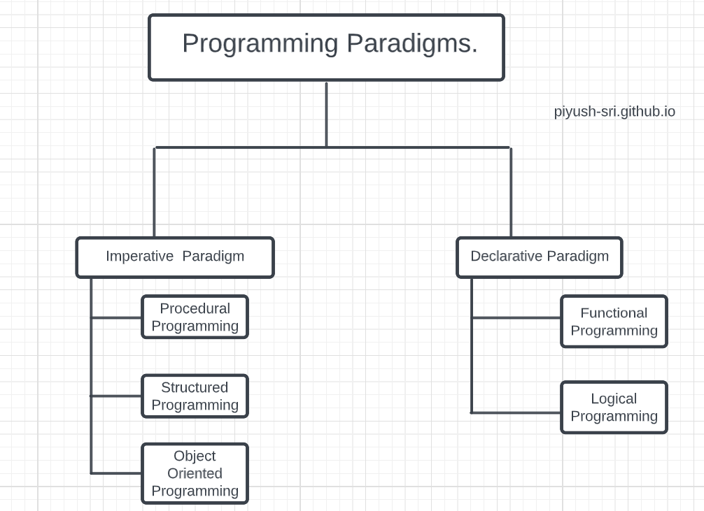

Programming Paradigm:
It is the methods which we use to solve problem or to do some task.A programming paradigm is a way, an approach, a style by which we write programs in a specific programming language to solve some problem.
You may be thinking what style or approach are we talking about. It is the approach creation of objects and creating programs in object oriented programming or solving problems with series of functions in functional programming or a style of creation of logic by series of symbols in logic programming.
Programming paradigms are approaches used to categorize or classify programming languages based on techniques and features they support.
For example:
1)Object-oriented programming is best suited for implementing real-world entities by hiding important data and finding methods with the entities. Example C++, Java, Python, etc.
2)Logical programming is best for creating logic by a complex structure of symbols. Example Prolog, F-logic, etc.
A good programming language should support multiple paradigms because different programming problems require a different way to approach. If a programing language support only one or two paradigms then it may not be sufficient or contains feature required.
Most modern languages support are multi-paradigm languages like C++, C#, Python, Go, etc.
Types Of Programming Paradigms:

1)Imperative Programming Paradigm.
2)Declarative Programming Paradigm.
Understanding Imperative and Declarative:
Let’s Take a simple Example,In C++ Language you learn about stack data structure, and also implemented each function of stack data structure step by step, like for push operation you declare and provide implementation of a push function , for pop operation you declare and provide implementation of a pop function .
So, we learn stack data structure by first implementing every stack functions and understanding their functioning step by step.This approach is known as Imperative Programming Paradigm in this the code describes a step-by-step process for a program’s execution. Because of this, beginners often find it easier to reason with imperative code by following along with the steps in the process.
The step-by-step process contains individual statements, instructions, or function calls. In the programming world, this process is called the control flow.
On the other hand, you also learned about header files in C/C++ language,for stack data structure we already have a header file in C++ and we include it as #include<stack>,this header file already have the implementation of the stack functions so when you are including stack header file you need not to provide implementation of stack functions you can just directly use them by calling and passing some value to them. This is declarative Programming Paradigm, in this we only concern about the result we want and use the already implemented functions according to our use to get our desired output.
Example:1
//1) *Imperative approach to implement stack using arrays in C++
#include <iostream>
using namespace std;
int stack[100], n=100, top=-1;
void push(int val) {
if(top>=n-1)
cout<<"Stack Overflow"<<endl;
else {
top++;
stack[top]=val;
}
}
void pop() {
if(top<=-1)
cout<<"Stack Underflow"<<endl;
else {
cout<<"The popped element is "<< stack[top] <<endl;
top--;
}
}
void display() {
if(top>=0) {
cout<<"Stack elements are:";
for(int i=top; i>=0; i--)
cout<<stack[i]<<" ";
cout<<endl;
} else
cout<<"Stack is empty";
}
int main() {
int ch, val;
cout<<"1) Push in stack"<<endl;
cout<<"2) Pop from stack"<<endl;
cout<<"3) Display stack"<<endl;
cout<<"4) Exit"<<endl;
do {
cout<<"Enter choice: "<<endl;
cin>>ch;
switch(ch) {
case 1: {
cout<<"Enter value to be pushed:"<<endl;
cin>>val;
push(val);
break;
}
case 2: {
pop();
break;
}
case 3: {
display();
break;
}
case 4: {
cout<<"Exit"<<endl;
break;
}
default: {
cout<<"Invalid Choice"<<endl;
}
}
}while(ch!=4);
return 0;
}
Now, Converting the imperative approach to declarative approach.
ex:
//Declarative Approach using stack data structure.
#include <iostream>
#include <stack>
using namespace std;
class stack1
{
stack<int> st;
public:
void isemt()
{
if(st.empty())
cout<<"Stack is empty"<<endl;
else
cout<<"Stack is not empty"<<endl;
}
void stksize()
{
cout<<"Size of stack is:"<<st.size()<<endl;
}
void stkpush(int val)
{
st.push(val);
}
void stkpop()
{
st.pop();
cout<<"The element is popped "<<endl;
}
void display()
{
while (!st.empty())
{
cout << ' ' << st.top();
st.pop();
}
cout << endl;
}
};
int main() {
stack1 stk;
int ch, val;
cout<<"1) Push in stack"<<endl;
cout<<"2) Pop from stack"<<endl;
cout<<"3) Display stack"<<endl;
cout<<"4) Check stack is empty or not"<<endl;
cout<<"5) Size of stack"<<endl;
cout<<"6) Exit"<<endl;
do {
cout<<"Enter choice: "<<endl;
cin>>ch;
switch(ch) {
case 1: {
cout<<"Enter value to be pushed:"<<endl;
cin>>val;
stk.stkpush(val);
break;
}
case 2: {
stk.stkpop();
break;
}
case 3: {
stk.display();
break;
}
case 4: {
stk.isemt();
break;
}
case 5: {
stk.stksize();
break;
}
case 6: {
cout<<"Exit"<<endl;
break;
}
default: {
cout<<"Invalid Choice"<<endl;
}
}
}while(ch!=6);
return 0;
}
You must be confused many of you haven’t read that big codes, so here is an simple example.
Q:C++ Program to raise x to the power of y.
1.Imperative Approach.
#include
using namespace std;
int main(){
int x, y, ans = 1;
cout << "Enter the base value: n";
cin >> x;
cout << "Enter the exponent value: n";
cin >> y;
for(int i=0; i<y; i++)
ans *= x;
cout << x <<" raised to the power "<< y <<" is "<&;lt;ans;
return 0;
}
2.Declarative Approach.
#include <iostream>
#include <cmath>
using namespace std;
int main()
{
float base, exponent, result;
cout << "Enter base and exponent respectively: ";
cin >> base >> exponent;
result = pow(base, exponent);
cout << base << "^" << exponent << " = " << result;
return 0;
}
Now i hope that the meaning of imperative and declarative is clear to you guys!!!.
Languages which can be use both paradigm are :
Python- supports both imperative and declarative programming paradigm with the concept of python libraries and modules.
Java- Supports both imperatve and declarative programming paradigm with introduction of collections framework.
C++ - Supports both imperative and declarative programming paradigm with introduction of STL(Standard Template Library) which introduced in its newer version.
| Imperative programming paradigm(how to do) | Declarative programming paradigm(what to do) |
|---|
| You describe the step-by-step instructions for how an executed program achieves the desired results. | You set the conditions that trigger the program execution to produce the desired results. |
| With the emphasis on the control flow, you can often follow the step-by-step process fairly easily. However, as you add more features and code to your program, it can become longer and more complex, making it increasingly confusing and time-consuming to read.
| This paradigm is less complex and requires less code, making it easier to read. |
| Cutomizing the source code is easierCustomizing the source code is more difficult because of complicated syntax and the paradigm’s dependence on implementing a pre-configured algorithm. | Customizing the source code is difficult.Customizing the source code is more difficult because of complicated syntax and the paradigm’s dependence on implementing a pre-configured algorithm. |
| Its main goal is to describe how to get it or accomplish it. | Its main goal is to describe the desired result without direct dictation on how to get it. |
| C,C++,Java,Python follows imperative programming. | Domain Specific ex: HTML,SQL,CSS,XML follows declarative Programming. |
Types of Imperative Paradigms.
1.1)Procedural Programming Language
Procedural Programming Language is same as Imperative approach of Programming in which you define implementation which a system follow step by steps to complete a task.
In this you use Procedures, Sub routines, Functions you implement it and call it wherever you need it.
User has to specify “what to do” and also “how to do”(step by step procedure). These instructions are executed in the sequential order.
1.2)Object Oriented Programming Language
Object-oriented programming, or OOP, is an approach to problem solving where all computations are carried out using objects. An object is a component of a program that knows how to perform certain actions and how to interact with other elements of the program. Objects are the basic units of object-oriented programming. A simple example of an object would be a person. Logically, you would expect a person to have a name. This would be considered a property of the person. You could also expect a person to be able to do something, such as walking or driving. This would be considered a method of the person.
Code in object-oriented programming is organized around objects. Once you have your objects, they can interact with each other to make something happen. Let's say you want to have a program where a person gets into a car and drives it from A to B. You would start by describing the objects, such as a person and car. That includes methods: a person knows how to drive a car, and a car knows what it is like to be driven. Once you have your objects, you bring them together so the person can get into the car and drive.
Classes and Objects
A class is a blueprint of an object. You can think of a class as a concept, and the object is the embodiment of that concept. You need to have a class before you can create an object. So, let's say you want to use a person in your program. You want to be able to describe the person and have the person do something. A class called 'person' would provide a blueprint for what a person looks like and what a person can do. To actually use a person in your program, you need to create an object. You use the person class to create an object of the type 'person.' Now you can describe this person and have it do something.
Classes are very useful in programming. Consider the example of where you don't want to use just one person but 100 people. Rather than describing each one in detail from scratch, you can use the same person class to create 100 objects of the type 'person.' You still have to give each one a name and other properties, but the basic structure of what a person looks like is the same.
1.3)Structured Programming Languages
In the process of coding,the lines of code keep multiplying,thus,size of the software increases. Gradually, it becomes next to impossible to remember the flow of program. if one forgets how software and its underlying programs,files,procedures are constructed, it then becomes very difficult to share ,debug, and modify the program. The solution to this is structured programming. It encourages the developer to use subroutines and loops instead of using simple jumps in the code, thereby bringing clarity in the code and improving its efficiency Structured Programming also helps programmer to reduce coding time and organize code properly.
Types of Declarative Paradigms
2.1)Logical Programming
Logic programming is a programming paradigm that is based on logic. This means logic programming languages have statements that follow logic by expressing facts and rules.
An algorithm is a logical programming paradigm that is a combination of a control component and a logic component. A program is usually broken down into these two components. While the control component is optional, the logic component is the essence of the algorithm.
In purely logic-based programs (i.e., the programs that do not use control components), the logic component alone decides the solution. In a program where both the components are employed, the control component determines the ways by which the solution is produced.
2.2)Functional Programming
FP is a style of programming in which the main program building blocks are functions as opposed to objects and procedures. A program written in the functional style doesn’t specify the commands that should be performed to achieve the result, but rather defines what the result is.
Consider a small example: calculating the sum of a list of numbers. In the imperative world, you implement this by iterating over the list and adding the numbers to the accumulator variable. You explain the step-by-step process of how to sum a list of numbers. On the other hand, in the functional style, you need to define only what a sum of a list of numbers is. The computer knows what to do when it’s required to calculate a sum. One way you can do this is to say that the sum of a list of numbers equals the first element of the list added to the sum of the rest of the list, and that the sum is zero if the list is empty. You define what the sum is without explaining how to calculate it.
Difference between Functional Programming and Object Oriented Programming
| Functional Programming | Object Oriented Programming |
|---|
| This programming paradigm emphasizes on the use of functions where each function performs a specific task. | This programming paradigm is based on object oriented concept. Classes are used where instance of objects are created |
| In Functional programming, recursion is used for iterative data. | In OOPs, loops are used for iterative data. |
| The basic elements of functional programming are Variables and Functions. | The basic elements of object-oriented programming are objects and methods. |
| Functional programming is used only when there are few things with more operations. | Object-oriented programming is used when there are many things with few operations. |
| In functional programming, the main focus of programming is what are we doing | In object-oriented programming, the main focus of programming is how are we doing. |
Pillars of Object Oriented Programming
1)Abstraction
Data abstraction means hiding of data.
Abstraction is implemented automatically while writing the code in the form of class and object.
It shows only important things to the user and hides the internal details.
Abstraction (from the Latin abs, meaning away from and trahere , meaning to draw) is the process of taking away or removing characteristics from something in order to reduce it to a set of essential characteristics. Abstraction is related to both encapsulation and data hiding.
he goal of “abstracting” data is to reduce complexity by removing unnecessary information.
Realtime Examples of Abstraction:
We all use an ATM machine for cash withdrawal, money transfer, retrieve min-statement, etc in our daily life. But we don’t know internally what things are happening inside ATM machine when you insert an ATM card for performing any kind of operation.
Example:
#include<iostream>
using namespace std;
class Addition
{
private: int a=10,b=10,c; // Hidden data from outside world
public:
int add()
{
c=a+b;
cout<<"Addition is : "<<c;
}
};
int main()
{
Addition a;
a.add();
return 0;
}
Output:
Addition is : 20
a)In the above example, class Addition adds numbers together and returns the addition or sum. The public member add() function is the interface to the outside world and a user needs to know to use the class. The private member int a,b,c are something that the user does not need to know about, but is needed for the class to operate properly.
b)Abstraction provides security for the data from the unauthorized methods and can be achieved by using class
Abstraction can be achieved in two ways:
Abstraction using classes: An abstraction can be achieved using classes. A class is used to group all the data members and member functions into a single unit by using the access specifiers. A class has the responsibility to determine which data member is to be visible outside and which is not.
Abstraction in header files: An another type of abstraction is header file. For example, pow() function available is used to calculate the power of a number without actually knowing which algorithm function uses to calculate the power. Thus, we can say that header files hides all the implementation details from the user.
Access Specifiers Implement Abstraction:
Public specifier: When the members are declared as public, members can be accessed anywhere from the program.
Private specifier: When the members are declared as private, members can only be accessed only by the member functions of the class.
Let's see a simple example of abstraction in header files.
Ex: Program to calculate the power of a number.
#include <iostream>
#include<math.h>
using namespace std;
int main()
{
int n = 4;
int power = 3;
int result = pow(n,power); // pow(n,power) is the power function
std::cout << "Cube of n is : " <<result<< std::endl;
return 0;
}
Output:
Cube of n is : 64
In the above example, pow() function is used to calculate 4 raised to the power 3. The pow() function is present in the math.h header file in which all the implementation details of the pow() function is hidden.
Let's see a simple example of data abstraction using classes.
#include <iostream>
using namespace std;
class Sum
{
private: int x, y, z; // private variables
public:
void add()
{
cout<<"Enter two numbers: ";
cin>>x>>y;
z= x+y;
cout<<"Sum of two number is: "<<z<<endl;
}
};
int main()
{
Sum sm;
sm.add();
return 0;
}
Output:
Enter two numbers:
3
6
Sum of two number is: 9
In the above example, abstraction is achieved using classes. A class 'Sum' contains the private members x, y and z are only accessible by the member functions of the class.
Advantage of Abstraction:
1)Abstraction increases the reusability of the code because of the proper partitioning.
2)It reduces the complexity as well as the redundancy of the code, hence increasing the readability.
3)Using classes and objects increases the security of the code. We can declare the parts of the code as private to keep them secure.
4)Due to abstraction, the important parts of the code are secure as only the essential features are provided to the user and they don’t know the background details.
5)Abstraction allows changing internal implementations without affecting its user-level code.
2)Encapsulation:
Encapsulation is one of the important properties of an object-oriented programming language and is defined as wrapping up data and functions into a single unit (e.g. class).
For example, when we create a class and declare variables and functions inside it, we are basically binding them together with the help of the class, thus implementing encapsulation.
But creating a class with properties (attributes) and behaviors (methods) does not always implement encapsulation.
The core concept of encapsulation in OOP is to hide the state (attributes) of an object or class from the outside so that our application is secure and modularised.
How Exactly can we Implement Encapsulation in OOP?
To implement Encapsulation, we restrict the accessibility of the attributes and make the attributes and functions work together.
One of its most implemented example is the getter and setter of a variable.
We create a private variable and write a getter and setter function for it. In doing so no other class can directly access the variable from outside and it can only be done through getter and setter.
That’s why it is said that encapsulation in a way to implement abstraction.
Example of Encapsulation in C++
#include <iostream>
using namespace std;
class Math{
private:
int sum; //Can't be accessed from the main method.
public:
//setter for sum
void add(int a, int b){
this->sum = a + b;
}
//getter for sum
int getSum(){
return this->sum;
}
};
int main()
{
//Single unit i.e. object of a class
Math math;
//add two number
math.add(5,4);
//get the sum using getter method
cout << "Sum: "<< math.getSum() << endl;
return 0;
}
Output: Sum:9
Advantage of encapsulation:
1)In C++, encapsulation helps to combine the related members into a single class, making the code look cleaner and increasing readability.
2)The get() and set() functions provide read-only and write-only accessibility to the user. Hence, keeping the data secure.
3)The bundling of the data eases out the development in general. The testing, debugging, and execution of these bundles can be done individually, which will not affect the other parts.
4)Data hiding is a good way to keep the data secure from the outside world. Hence, improving the security of the code even further.
5)Encapsulation provides us with efficient control of the data as we can alter one part of the code without affecting the other.